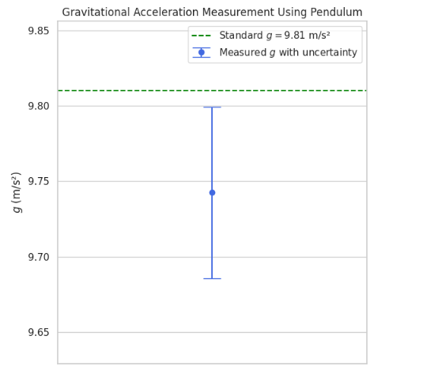
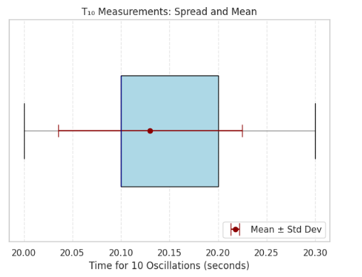

Measuring Earth's Gravitational Acceleration with a Pendulum
Motivation
The acceleration due to gravity (\(g\)) is a fundamental physical constant that governs motion on Earth. One classical and elegant method to measure \(g\) is using a simple pendulum, whose oscillation period is directly related to \(g\).
This experiment reinforces:
- Core principles of periodic motion
- Quantitative measurement techniques
- Uncertainty analysis in real-world data collection
Theory: Pendulum and Gravitational Acceleration
For small angles (\(\theta < 15^\circ\)), the period \(T\) of a simple pendulum is related to gravity \(g\) and the pendulum length \(L\) as:
To determine \(g\) experimentally:
- Measure \(L\) (length from pivot to mass center)
- Measure \(T\) (oscillation period)
- Calculate \(g\) using the formula above
Setup
Materials Required:
- A string (1–1.5 meters)
- A small weight (key, coin pouch, sugar bag)
- Stopwatch or smartphone timer
- Ruler or measuring tape
Data Collection Steps
-
Attach the weight securely and measure the length \(L\) from the pivot to the center of mass of the weight.
-
Pull the pendulum to a small angle (<15°) and release.
-
Measure the time \(T_{10}\) for 10 full oscillations — repeat this 10 times and record all values.
-
Calculate the mean \(\bar{T}_{10}\) and standard deviation \(\sigma_T\).
-
Compute uncertainty in the mean time using:
- Convert to single-period values:
Code Implementation
import numpy as np
import matplotlib.pyplot as plt
# === INPUTS ===
L = 1.00 # Pendulum length (m)
delta_L = 0.005 # Uncertainty in length
# 10 measurements of time for 10 oscillations (seconds)
T10_measurements = [20.1, 20.2, 20.0, 20.3, 20.1, 20.2, 20.1, 20.2, 20.1, 20.0]
n = len(T10_measurements)
# === CALCULATIONS ===
T10_array = np.array(T10_measurements)
T10_mean = np.mean(T10_array)
T10_std = np.std(T10_array, ddof=1)
delta_T10 = T10_std / np.sqrt(n)
# Convert to single oscillation period
T = T10_mean / 10
delta_T = delta_T10 / 10
# Compute gravitational acceleration
g = (4 * np.pi**2 * L) / (T**2)
# Uncertainty in g
rel_L = (delta_L / L)**2
rel_T = (2 * delta_T / T)**2
delta_g = g * np.sqrt(rel_L + rel_T)
# === VISUALIZATION ===
plt.figure(figsize=(6, 6))
plt.errorbar(1, g, yerr=delta_g, fmt='o', capsize=10, color='royalblue', label='Measured $g$ with uncertainty')
plt.axhline(9.81, color='green', linestyle='--', label='Standard $g = 9.81$ m/s²')
plt.xlim(0, 2)
plt.ylim(g - 2*delta_g, g + 2*delta_g)
plt.title("Gravitational Acceleration Measurement Using Pendulum")
plt.ylabel("$g$ (m/s²)")
plt.xticks([]) # Hide x-axis ticks
plt.legend()
plt.grid(True)
plt.tight_layout()
plt.show()

import numpy as np
import matplotlib.pyplot as plt
# === TIME MEASUREMENTS ===
T10_measurements = [20.1, 20.2, 20.0, 20.3, 20.1, 20.2, 20.1, 20.2, 20.1, 20.0]
T10_array = np.array(T10_measurements)
T10_mean = np.mean(T10_array)
T10_std = np.std(T10_array, ddof=1)
# === PLOT ===
plt.figure(figsize=(6, 5))
# Boxplot of T10 measurements
plt.boxplot(T10_array, vert=False, widths=0.5, patch_artist=True,
boxprops=dict(facecolor='lightblue', color='black'),
medianprops=dict(color='darkblue'),
whiskerprops=dict(color='gray'),
capprops=dict(color='black'),
flierprops=dict(markerfacecolor='red', marker='o', markersize=6))
# Add mean + std deviation line
plt.errorbar(T10_mean, 1, xerr=T10_std, fmt='o', color='darkred',
capsize=8, label='Mean ± Std Dev')
plt.title("T₁₀ Measurements: Spread and Mean")
plt.xlabel("Time for 10 Oscillations (seconds)")
plt.yticks([])
plt.grid(True, linestyle='--', alpha=0.5)
plt.legend(loc='lower right')
plt.tight_layout()
plt.show()
